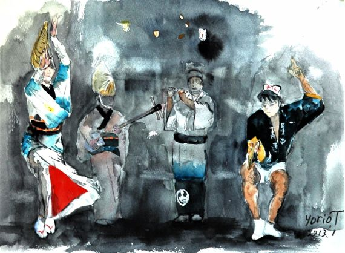
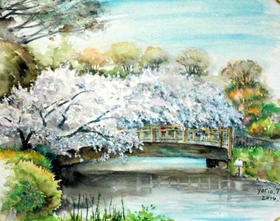

| Japanes style Watercolor paintings collection 日本的な水彩画50: 浮世絵風な水彩画50 いにしえの他人を敬う文化 | |
| 堤 順夫 | |
| (2019) | |
日本の水彩画集
Japanes styl Watercolor paintings collection
& ukiyoe Copy paintings
出版1 いにしえの他人を敬う文化person is lov
出版2 その一 日本人の美意識Japanese sense of beauty
出版3 いにしえ風な水彩画集 Watercolor painting collection
出版4 水墨画＆陶芸 予定
Monochrome ink painting&JapaneseCeramics
著者 堤 順夫 雅号 順風
名古屋市千種区仲田２丁目4-16
電話 052-762-7303
EMail =oiroy61okeus@ybb.ne.jp
website= yorio-salon.sakura.ne.jp
「いにしえの他人を敬う文化」アクセス累計で290万超え。
1鮎釣り師 水彩画用紙Ｆ４サイズ
釣りエッセイ もののあわれ 昭和54年
雨脚が激しくなったので私は釣りを中断して岸辺の林のなかへ雨宿りに入った。渓谷は山が迫っていて日暮れが早く、まだ四時なのに辺りの谷間は消入りそうに薄暗い。
林の梢から落ちる雨粒が私の菅笠を音をたてて打つ。
雨具を着ていたが背中が破れ雨が滲みて背筋が寒い。下半身も水の中に立ち込んでいたからずぶ濡れで、私は濡れネズミのようにみじめな姿である。茂みのなかで腰を下ろすと、むきだしの木の根が蛇のように這い、シダが垂れて不気味だ。
こうして無人の川辺で寒さに震えていると、無性に人恋しくて温かな食卓や家庭のぬくもり、人の和などが貴重に思え、逆に争いや欲望、贅沢がつまらなく感じて健康や愛、生命など人間の本質的な価値観に目覚める。雄大な大自然のなかの孤独な釣り師は、人間のはかなさ、小ささがしみじみ
と身に迫り何が大切かを教えてくれる。
対照的客観の「もの」と、感情的主観の「あはれ」が一致して生じる的情趣の世界である。寂しさとみじめさで無限の豊かさがあることを知った。
私の足元には同じように雨宿りする一匹の虫がいた。この心寂しい時に出会う一匹の虫、一輪の花は命の仲間として私に強い感動を与えた。悠久な自然と私が連帯し同化した瞬間で、静かに辺りを見回すと私の周りは私の仲間たちで一杯であった。
エッセイEssay
http://yoriosalon.sakura.ne.jp/newpage4.htm
2名古屋市の日泰寺 水彩画用紙Ｆ６サイズ
3日本の原風景 Ｆ２

4アジで一杯Ｆ３

5秋の参道 Ｆ４
6浮世絵 模写Copy paintings F４
7浮世絵 模写２ Copy paintings Ｆ４
8浮世絵 模写３Copy paintings Ｆ４
9浮世絵 模写４Copy paintings Ｆ６
10浮世絵 模写５Copy paintings Ｆ４
11京都 八坂の塔 Ｆ６
京都の旅
http://yorio-salon.sakura.ne.jp/newpage189.htm
12八坂神社 かるた始め Ｆ６
13奈良 明日香の秋 Ｆ４
14ひこばえの桜 Ｆ６
1５ 根菜類 Ｆ６
16飛騨高山市の里山 Ｆ10
17軍鶏 模写6 Copy paintings Ｆ６

18名城公園からの名古屋城 Ｆ１０
桜を出汁にして人々と睦会ういにしえの花見。日本人の原点。他人が
存在しうる環境こそ自分も生きられる美意識です。
http://yorio-salon.sakura.ne.jp/newpage27.htm
19北から眺める名古屋城 Ｆ６
20岐阜県瑞穂市の糸貫川の桜堤 Ｆ６
21京都 東寺 Ｆ６
22京都 仁和寺の五重の塔 Ｆ６
23白鷺 Ｆ６
24名古屋市 雨の建中寺 Ｆ６
25甚目寺観音 Ｆ６
名古屋の文化
http://yorio-salon.sakura.ne.jp/newpage115.htm
26名古屋城 正面 Ｆ６
春夏秋冬の四季は生老病死と重なる日本の自然観。
27北からの名古屋城 Ｆ６
28関市 吉田観音 Ｆ１０
「白日夢」初めて題名を付けてから描く。先の戦争で多くの国民が亡くなり、絵のなかに「死んだ弟を背負う少年」「集団自決したひめゆり部隊」「原爆ドーム」を描きいれた。
●1941月12月8日=この日の未明に日本海軍は真珠湾奇襲攻撃。
● 1942年末には制空権を失い本土が空爆されて民間人死亡。
●1944年７月７日サイパン島陥落。
● 1944年10月10日＝沖縄大空襲
●1945年3月7日＝硫黄島玉砕 この時に白旗を挙げるべきだった。
●1945年3月10日＝東京大空襲 2時間で10万人が焼け死んだ。
●1945年6月23日沖縄陥落
●1945年8月6日8時15分＝広島への原爆投下
●1945年8月8日＝ソ連参戦。北方四島
●1945年8月9日11時２分＝長崎への原爆投下
●1945年8月15日＝ 終戦。
軍部は国民には秘密裡に、本土決戦を覚悟した大本営や皇室を、何年間も食料備蓄して籠壕できる「象山地下壕、長野県」の建設が進んでいたが、終戦時には幸いにも完成していなくて全滅戦争は避けられた。
集団自決をした女学生のひめゆり部隊
死んだ弟を背負う少年と右は原爆ドーム。戦争に反対を唱えるだけでなく、国家権力はパワ＾ーを生んで暴走しやすいことを、国民は怒りを持って人物の投票すべきだ。松代象山地下壕のご案内 - 長野市ホームページ
https://www.city.nagano.nagano.jp/site/kanko-nagano/22100.html
ひと時の平和な江戸時代
29瑞穂市の菩提寺 超誓寺 Ｆ６
30京都 映画村 Ｆ４
31京都 祇園 Ｆ６
32谷汲の秋の華厳寺 Ｆ４
33名古屋 東山荘 Ｆ６
34日本舞踊 Ｆ４
35郡上踊り Ｆ４
http://yorio-salon.sakura.ne.jp/newpage220.htm
36郡上踊り２ Ｆ４
37郡上踊り３ Ｆ４
38郡上踊り４ Ｆ２
39葡萄 Ｆ６
40阿波踊り Ｆ４

41阿波踊り２ Ｆ４

学びすと http://yorio-salon.sakura.ne.jp/newpage207.htm
42阿波踊り3 Ｆ４
43阿波踊り４ Ｆ４
郡上おどりや阿波踊りは浴衣で踊る夏の夕涼みの風物詩です男は男らしい動きで女性はしなをつくり艶やかに、他人と共有することを楽しむ。花火、夏の夜祭などが賑わう 。
44自宅近くの蝮が池神社 Ｆ６
45 ukiyoe模写７ Copy paintings Ｆ６
46浴衣 Ｆ４
47足助の農家 Ｆ３
48富士山 Ｆ６
49名城公園の桜 Ｆ６

http://yorio-salon.sakura.ne.jp/newpage294.htm
50古都とミーちゃん Ｆ４
水彩画
http://yorio-salon.sakura.ne.jp/newpage10.htm
日本人の美意識
http://yorio-salon.sakura.ne.jp/newpage27.htm
絵画のサインは「yorio.T」または雅号「落款＆順風」です。
画用紙は主にクレスター、ワトソン、シリウスを使用。
水彩画用紙のサイズはＦで示し単位はｍｍです。Ｆ４Ｆ６が主です。
Ｆ6とは410mmx318mm